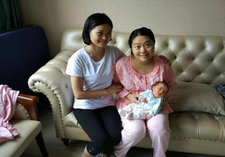
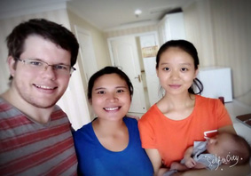

月嫂是在政府允许的专业机构，经过正规的培训，具有产妇和新生儿护理专业技能 ，并持有国家认定的合格证书的服务人员。主要负责幼儿各期特点与保健措施，儿童 生 长发育规律，影响生长发育的因素，体格发育指标的意义及测量，月嫂是在政府允许的专业机构 ，经过正规的培训，具有产妇和新生儿护理专业技能 并持有国家认定的合格证书的服务人员。主要负责幼 儿各期特点与保健措施，儿童长发育规律，影响生长发育的因素，体格发育指标的意义及测量。
- 新生儿护理 生活护理：保持室内空气清新 专业护理：体温测量、脐带消毒、尿布、奶瓶、毛巾消毒、二便三浴、抚触 常见病护理：产褥热病预防，红臀湿疹预防护理 潜能开发：感知语言动作训练，适当婴儿抚触、游泳有规律眨眼习惯养成
- 产妇护理 专业护理：子宫恢复观察，恶露排净观察，伤口护理，乳房护理 生活护理：月子餐营养，室内环境清洁卫生护理，床品衣物清洁 疾病预防：产褥热预防，乳腺炎预防，产褥期中暑预防 带教培训：喂奶姿势指导，亲子互动指导，传授家人基本护理技巧 心理护理：抑郁症观察，生活计划安排，谈话情绪舒缓
- 
- 